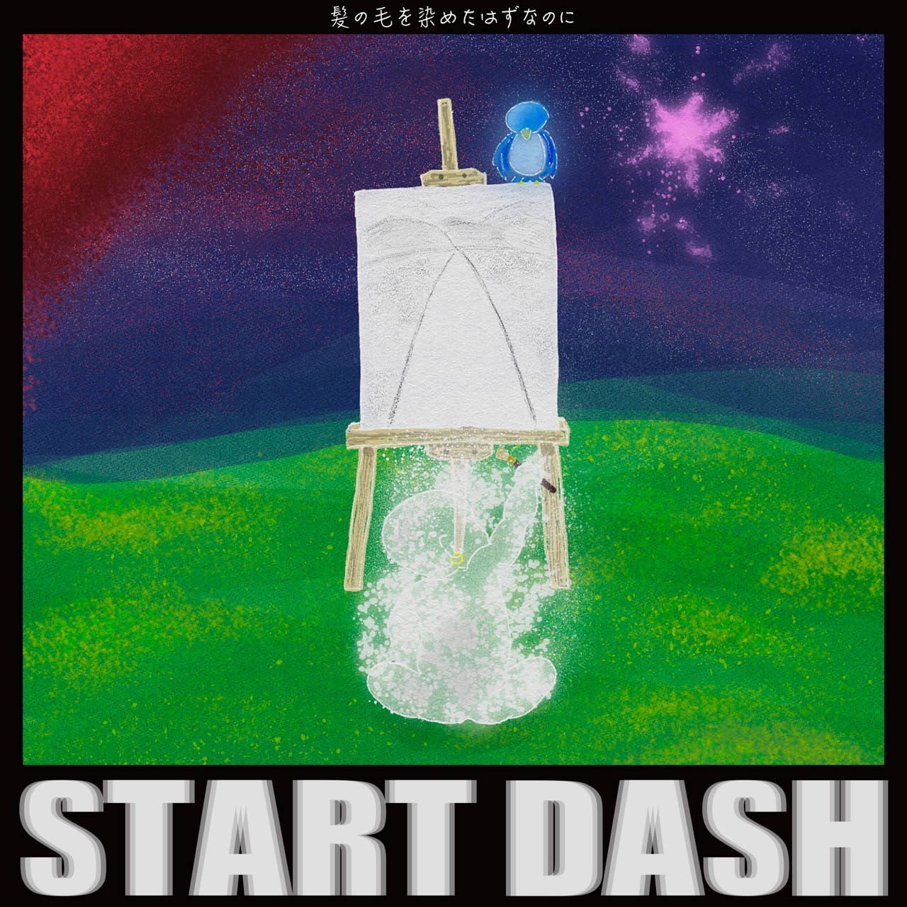
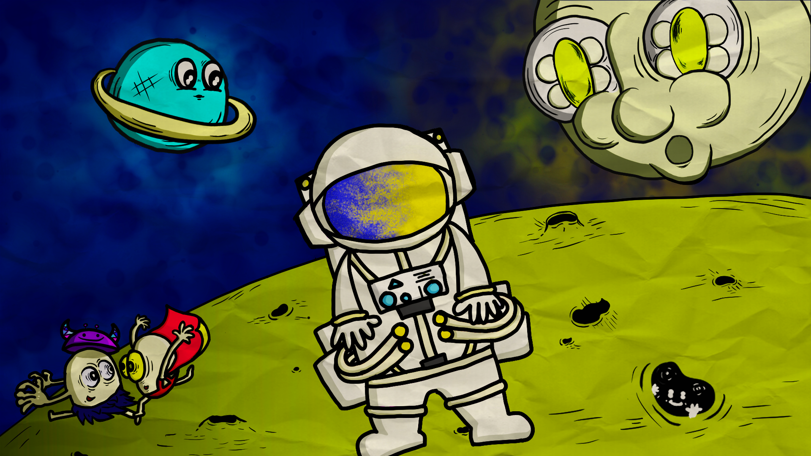
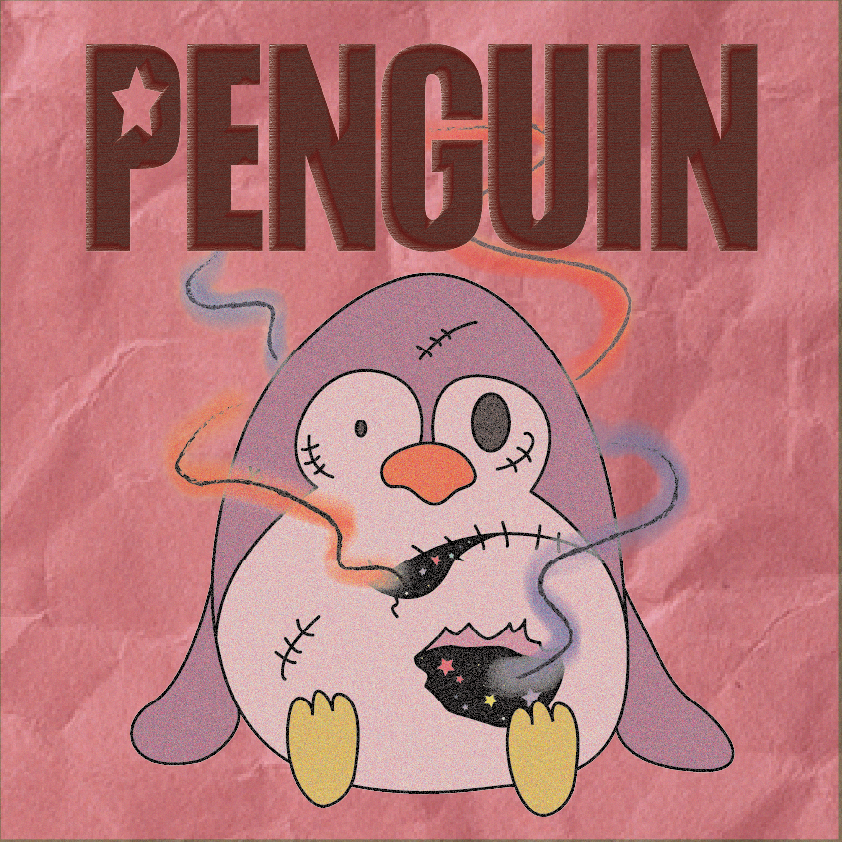
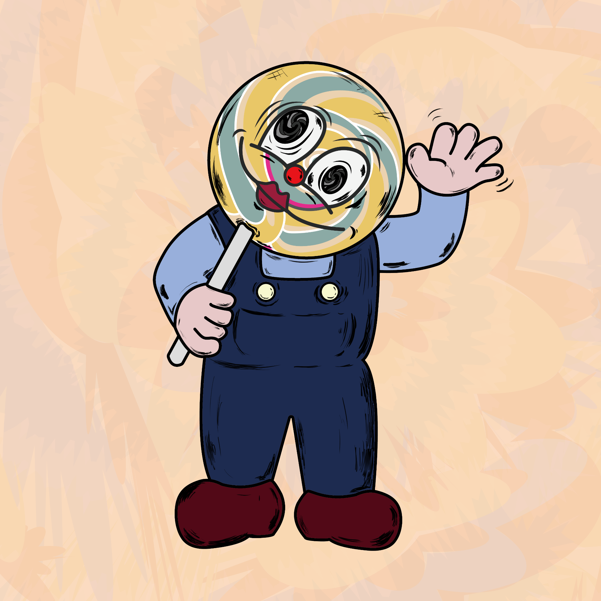
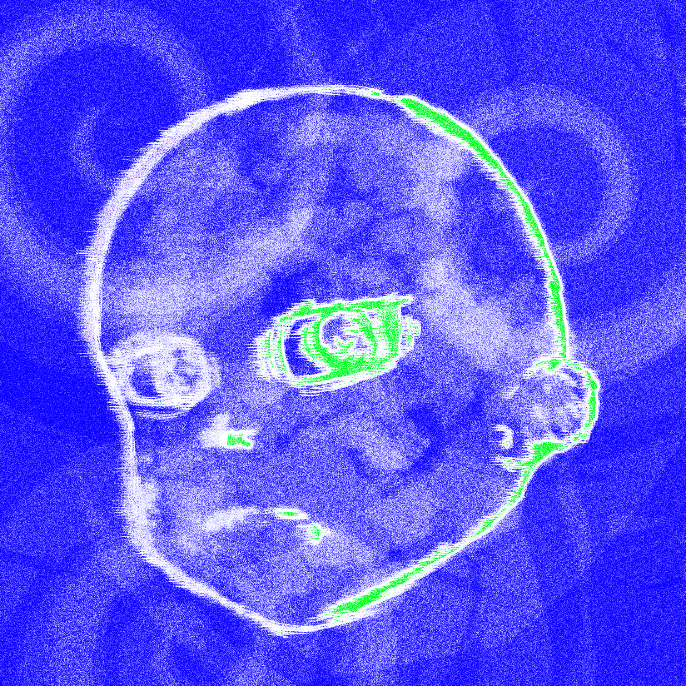

START DASH
髪の毛を染めたはずなのに 1st Digital E.P
「START DASH」ジャケットアートワーク
制作期間：1Week
使用ソフト：CLIP STUDIO PAINT
Illustrator
Photoshop

Behind
たくさんいるのに誰もいない
自分はひとりぼっちなのかという考えに陥る
そんな孤独じゃない孤独感を表現できていたら
制作期間：7hour
使用ソフト：CLIP STUDIO PAINT
Photoshop

ぺんぎんさん
SPY×FAMILYでお馴染みのぺんぎんさん
好きってだけで描きました
制作期間：3hour
使用ソフト：Illustrator

きゃん爺さん
どこか不気味でどこか愛らしい
優しい飴ちゃん配りの爺さん
ちょっと不気味で、でも怖くない。そんな世界観が描きたかった
制作期間：3hour
使用ソフト：CLIP STUDIO PAINT
Illustrator

イキヌキ
この時に取り掛かっていた作品に手が詰まった時
気がついたらこの子と目が合っていた
息抜きって必要だなと感じるくらいに追い詰められた表情
制作期間：2hour
使用ソフト：CLIP STUDIO PAINT
Photoshop

駄作
描けば描くほど嫌になる
自分の不才にうんざりする
努力の難しさ、そんな苦悩を表現したい
制作期間：3hour
使用ソフト：Illustrator